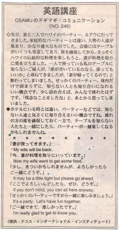

よろしかったらどうぞ。
先日、妻と二人でハワイのパーティー、ルアウに行ってきました。家庭的なパーティーとは違い、大勢の人達が集まり、かなり盛大なものでした。会場にはテーブルがいくつも用意してあり、席を確保してから、さっそくハワイの伝統的な料理を楽しもうと、妻が料理を取りに席を立ちました。一人で座っている私のテーブルに知らないご婦人が、「席が空いているのなら、座ってもいいか」と尋ねてきましたが、「妻が帰ってくるので」と断わってしまいました。せっかくのパーティー。身内だけで固まらずに、知らない人とも知り合いになれる良い機会です。少し詰め合えば、みんなで座れたはずです。「残念なことをしたな」と、あとから思ってしまいました。
ホテルにいる時とは違い、パーティーなどでは、知らない人達と気さくに知り合えるいい機会ですね。連れの方の席を確保しておく一方で、テーブルを知らない人たちと一緒にしたら、パーティーが一層楽しくなるかもしれませんね。
妻が戻ってきます。
My wife will be back.
今、妻が料理を取りにいっています。
My wife went to get some food just now.
少し、きついかもしれませんが、よろしかったら、どうぞ。
It may be a little tight, but you can sit here if you want.
ここでよろしいんでしたら、どうぞ。
If you don’t mind, you can sit here.
せっかくのパーティーですから、一緒に楽しみましょう。
It’s a party. Let’s have fun together.
知り合えて、本当に良かったです。
I’m really glad I got to know you.

| © 1995-2013 NACOS International Institute. All Rights Reserved. |